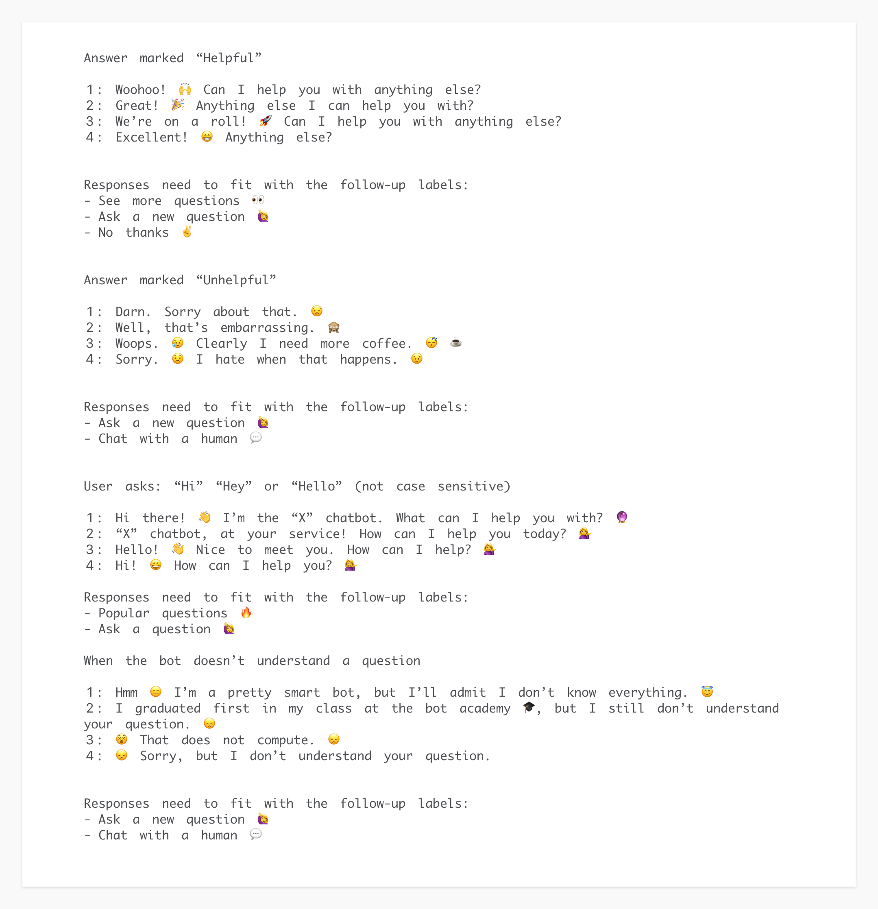
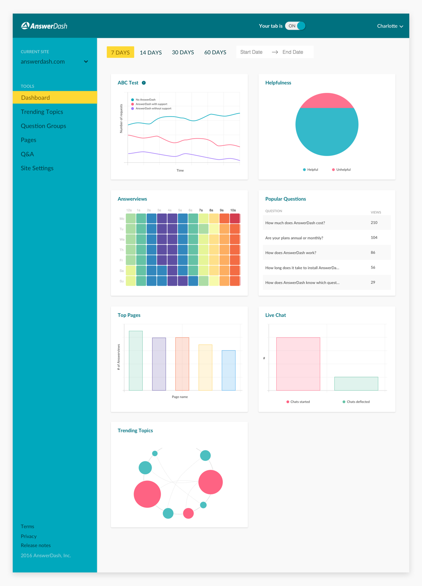

AnswerDash is a Seattle-based startup that uses machine learning to provide contextually relevant customer support. Businesses integrate AnswerDash's technology into their websites and mobile apps so they can reduce response times to frequently asked questions and increase sales.
I joined AnswerDash in April 2016 as their lead product designer. They were looking for someone who could own product as well as drive design efforts across the company. From user research, interface design, and prototyping, to brand identity and marketing materials, my role spanned all aspects of the product development process.
Brand
AnswerDash was founded in 2012 by two HCI professors at the University of Washington. Being the scrappy startup that they were, they focused primarily on developing their core technolgoy, and placed less of an emphasis on brand identity. In the proceeding years the company received millions in venture capital, relocated from a small shared office on the UW campus to a highrise in downtown Seattle, hired a CTO with a staff of full-time engineers, a VP of Sales and Marketing with a dedicated sales team, a Customer Success Manager, and a professional CEO.
While the shotgun branding might've been representative of the company in its early days, it didn't accurately reflect the company in its current form. In order to close key deals with established brands, many on the leadership team felt we needed a refresh on the existing identity.
Shortly before I joined, the company made this a top priority. In addition to a number of other concurrent projects, providing creative direction and collaborating with Heckler Associates (the agency we hired) occupied my first few months at AnswerDash.
I wanted our new brand colors to be consistent across our product and marketing materials, so I tested our top choices on our Customer Tools UI.
Front of old business card
Back of old business card
Front of new business card
Back of new business card
End User Tool
Most B2B products are rarely seen by end users. AnswerDash was unique in that we created products for other businesses (who we referred to internally as Customers), as well as their customers (who we referred to internally as End Users).
Below is a screenshot of our End User Tool (the thing our customers integrated into their websites and mobile apps), as well as our Customer Tools Dashboard (the thing our customers used to monitor performance and manage content).
End User ToolCustomer Tools
Visuals
A recurring feature request amongst existing customers, and a blocker for prospective ones, was the dated visual design of our End User Tool and its lack of customizability. We were missing sales opportunities with established brands who wanted fine grain control over iconography, layout, and spacing. Additionally, for customers who didn't have a team of in-house designers, we needed to ensure our default styling was both current and usable.
Because time and engineering resources were constrained, a radical overhaul of our current design was out of scope. By taking an iterative approach, I was able to work in parallel with the engineering team and implement small changes continuously. This allowed us to make steady progress, build momentum, and track the impact of our changes over time.
Interaction
Our existing expand/collapse model resulted in various bugs ranging from alignment issues, blocking content, and users losing context when expanding or collapsing a question.
I explored another option that included a hierarchical navigation system, giving each Q&A their own dedicated screen. This style of navigation would support the structure and purpose of our product without calling attention to itself, making it natural for users to engage with.
Entry points
In the fall of 2016, we received repeated emails about a specific feature request: customers wanted the End User Tool to be draggable. Before proceeding, I took a step back and decoupled the problem from the proposed solution.
The problem was that our tab covered content on their website.
One possible solution was to allow the tab to be moved around by dragging. The pro would be that users could move the tab out of the way, but I shared an important con with my team:
We would be forking our most important and primary interaction: opening AnswerDash. When clicking on the tab, not only could users launch our tab, they could also move it. This would add significant complexity to usage data, and result in error states, making it harder for us to optimize our product over time as we would never be certain of user intent. Adding that complexity doesn't seem worth the trade-off.
Ideally, we should never allow the covering of content to be a state in the first place. Some alternate solutions I proposed were:
a. Perform a design audit on our top N customers to see how they've successfully incorporated AnswerDash. Then create a set of implementation guidelines, calling out this potential state. This would allow us (mainly our Customer Success person) to fall back on these guidelines.
b. My gut feeling tells me our new tab design (circular help button) will aid in curbing this state for our customers. We are also in the middle of incorporating a horizontal offset option (not just vertical, as we currently do) in Customer Tools, allowing customers to adjust the position of the button even further.
c. ??? Let’s explore some more together.
The new circular help button and advanced placement controls addressed our customers' needs, allowing them to place the End User Tool exactly where they wanted.
Mobile SDK
During the redesign of the end user tool, the company decided it was high time we had a competitive mobile presence. Our mobile web experience was rudimentary at best, so we took this opportunity to create consistency across all platforms (web, mobile web, and native mobile).
We outsourced the SDK development to Parkside, an Austrian software development studio. I worked alongside both teams to assure design consistency, deliver assets, clarify interactions and animations, and perform user testing as needed. We all moved full steam ahead and had both iOS and Android SDKs completed within 6 weeks.
Once the SDKs were built, I put together a style guide to ensure our presence was consistent on all platforms.
Chatbot
In April 2016, during Facebook’s F8 conference, Mark Zuckerberg announced the launch of the Messenger Platform, as well as a new class of bots that would work inside Facebook Messenger's group chats. Shortly after, Facebook began to open up their APIs, allowing developers to create their own custom bots. By summer, the chatbot craze was in full effect and AnswerDash thought we could leverage our technology to create a chatbot for our product line.
The goal of the chatbot was to provide automated customer service, support, and sales, without the need for dedicated support staff. AnswerDash's technology would sync with knowledge bases, cluster similar topics together, and surface them in the form of categories in the chatbot UI.
Given the limitations within the API, there was little to do in the way of custom visual design. However, I checked the Messenger Platform changelog daily to monitor new capabilities, and designed an experience that helped users find answers with minimal interaction.
My co-workers and I had fun collaborating on the chatbot responses:

The carousel headers felt empty and bland with just the text and white background, so I explored some alternatives using images and color.
Ideally, our customers would manually curate custom images for their categories, but we needed a tasteful default in the absence of that. I decided on a color gradient, allowing each element to have its own identity. Though the carousel was currently limited to five elements, the color gradient would account for potentially unlimited ones in the future.
After announcing the release of AnswerBot (the name of our chatbot), we learned that not only were businesses unfamiliar with Messenger as a platform for customer support, they were unenthusiastic about incorporating it into their existing workflows. While we were excited about its potential, we refocused our attention on our primary product.
Analytics
Our Analytics feature hadn't been touched in years, and that reflected in its current form. The UI and visual patterns weren't consistent, important information was nested under less important information, and some of the data being presented felt like it was reaching.
V1 Analytics
Usage data showed that the majority of our customers poked around Analytics when they first signed up with AnswerDash, but rarely returned. Given that information, the Customer Success Manager and I set up calls and in-person meetings with some of our top customers to gain further insight.
The responses were unanimous: our current analytics were confusing, and weren't providing value to our customers.
Top Pages is all I use. The rest is confusing.
What is Content Gaps? I don’t get it. And the “hours saved” calculations feel useless since they don’t apply to us.
There’s just a lot going on and it’s hard to make sense of it all.
Most components of Analytics hadn’t been accessed in months, while others were viewed intermittently. This was a great opportunity to trim the fat from this feature and create an experience that customers would want to engage with.
At the time, we had high level analytics under Dashboard, and detailed analytics under Analytics. I though to myself Why aren’t these in the same place? So far as I could tell, there was no reason why these couldn't be combined into the Dashboard, where our users would immediately see a high-level view of their data.
I asked specific questions to be sure the redesign was a success:
What data do we want to support?
How can that data fit into a system?
How can that system be broken down into pieces?
How can those pieces be customized by users?
I decided to go with a card-based interaction model to serve as entry points to more detailed information. This modular approach would support the addition or removal of cards in the future, allow users to customize the order of their data by dragging cards to a subjective sort order, and/or hide cards that weren't relevant to them. For example, there is a 'Live Chat' card, but not all customers support live chat.
I went through quite a few iterations to get the visualizations just right.

The end product resulted in combining high and low-level analytics into one dashboard, simplifying data visualizations, removing unused controls, and introducing more breathing room. Based on user feedback, this redesign decreased cognitive load by reducing visual clutter, building around existing mental models, and drastically reducing tasks for the user to complete.